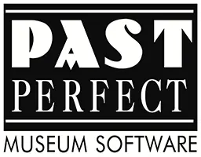
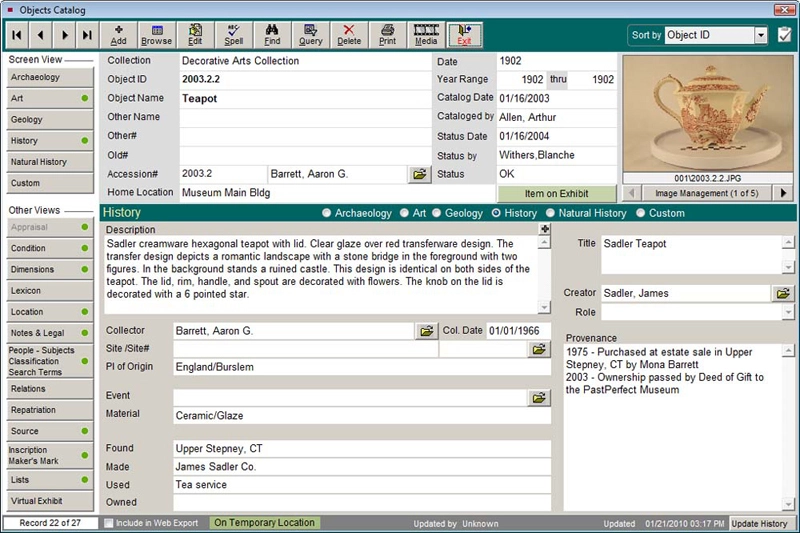
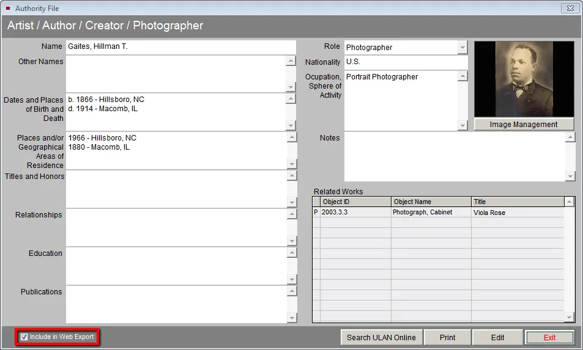

DATABASE SOFTWARE RESEARCH
After extensive research into varying softwares, PastPerfect was decided as the most appropriate for the museum. PastPerfect is a museum collection and contact management software used by over 12 thousand museums worldwide. It's cost-effective, easy to use, comprehensive, and designed specifically for museum professionals.
Past Perfect Logo (PastPerfect, 2025)
PastPerfect is a performant and consistent technology; stable and optimised enough to handle millions of records. The software contains barcode and catalogue number tools which we will discuss later, and networked versions are also available for team usage. (PastPerfect, 2025) The software has a user-friendly graphical interface, and there are countless tutorials, training guides, and 24/7 customer service contacts available. Furthermore, there is only a one time cost, around $1500, instead of an annual subscription. (Wikipedia, 2025)
PastPerfect meets all of the relevant business requirements for a database software. A populated asset register using PastPerfect includes fields for object's IDs, titles, descriptions, origins, and more. Database managers can also add notes, stories, and media to each object; such as images, audio, videos, or even webpages and external records. (PastPerfect, 2025) There is also an option to add audit history to track item locations, so museum workers can easily find whether an object is in storage, on display, or on loan to another museum. There are also easy built-in processes for adding new objects, loans, condition reports, etc; to effectively manage assets and their information. [24]
Software Home Screen (PastPerfect, 2025)
Furthermore, as stated in the problem description, the museum has already started digitalising some of their objects. This is not an issue with PastPerfect, as users can easily import data from an Excel or CSV file into the software. (Wikipedia, 2025) Staff also have the option to add new data to an excel spreadsheet first, before adding it to the database, to limit time and training needed.
While this might save a bit of time, adding each 25 million collection item to the database is very time-consuming. However, reverse image searching might be a solution for this issue. Being able to automatically find related images to each museum object using reverse image searching engines, such as Google or TinEye, or accessing existing online museum APIs; can help. This solution can limit the amount of time spent researching the history and origin of each item, as that information might be easily accessible online already. (TinEye, 2025)
In addition, PastPerfect also has an online integration feature. You can easily use the existing database to build a searchable, online collection to share the database with a broader audience. (PastPerfect, 2023) Managers can specifically choose which of the items and what information to display online, in case some objects are sensitive; while viewers can search the database using keyboards, terms, or other advanced criteria. The online websites are also entirely customisable and easily adaptable to a variety of devices, and also be downloadable as well for people who have limited time online. (PastPerfect, 2023)
Online Integration Example (PastPerfect, 2025)